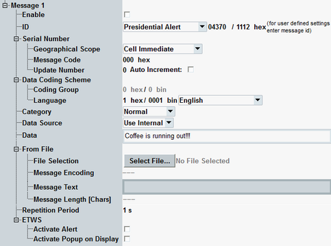
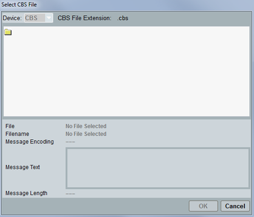

This section configures a particular CB message.

Enables the transmission of a CB message.
Remote command:Sets the message ID and ID type as defined in the 3GPP TS 23.041, 9.4. Edit this parameter for user-defined settings. Also, hexadecimal values are displayed for information.
- Presidential level alerts - IDs 4370 and 4383
- Extreme alerts - IDs 4371 to 4372 and 4384 to 4385
- Severe alerts - IDs 4373 to 4378 and 4386 to 4391
- Amber alerts - IDs 4379 and 4392
- Earthquake warning - ID 4352
- Tsunami warning - ID 4353
- Earthquake and tsunami warning - ID 4354
- ETWS test message - ID 4355
- User defined
Sets the serial number as defined in the 3GPP TS 23.041, 9.4.
- "Geographical scope": message code validity area
- "Message code": 10 bits number
- "Update number": version of a CB message
When using "Auto Increment", the update number is changed upon change of any of the CBS parameters in the signaling application.
Identifies the coding group and language of the CBS data coding scheme as defined in 3GPP TS 23.038, section 5.
If "Data Source" is set to "Use Internal", then "Coding Group" = 0 (hardcoded), "Language" is selectable.
If "Data Source" is set to "From File", then "Coding Group" = 1 (hardcoded), "Language" = 1 (hardcoded -UCS2).
Remote command:Specifies the privilege category of a CB message.
Remote command:Defines, which source is used as a CB message.
- "Use Internal": use the message configured as "Data".
- "From File": use the file specified in the section "From File".
Defines the content of a CB message. The defined text is used if the "Data Source" = "Use Internal"
Text (ASCII) message from internal can be up to 1395 characters long with coding group set to 0 (hardcoded).
Remote command:Selects a message stored in a file. The message, is used if the "Data Source" = "From File"
Selects previously stored file containing a CB message. The CB message file has to be stored on the internal drive. The "Select CBS File" dialog opens the directory D:\Rohde-Schwarz\CMW\Data\cbs\WCDMA\. All files with extension *.cbs are shown. Also the time of file creation is displayed.

Shows the encoding of the text field of the message file. Content is encoded as 16-bit Unicode (UTF16). Any other value results in an error. The CBS message is not sent. UTF16 coding can be read either as a binary format or as a text.
Remote command:Shows user data of the CBS message to be sent. Content is encoded according to the specified "Message Encoding".
Remote command:Sets the repetition period of the message to be broadcast.
Remote command:Configures the instructions to UE for earthquake and tsunami warning system (ETWS).
If one of the ETWS IDs is selected (see "ID"), first, the R&S CMW sends a paging message with an ETWS indicator. The paging message contains the instructions to UE (activate alert / activate popup - if selected) plus the serial number of a CB message. Afterwards, the ETWS message is sent using CBS functionality.
Remote command: